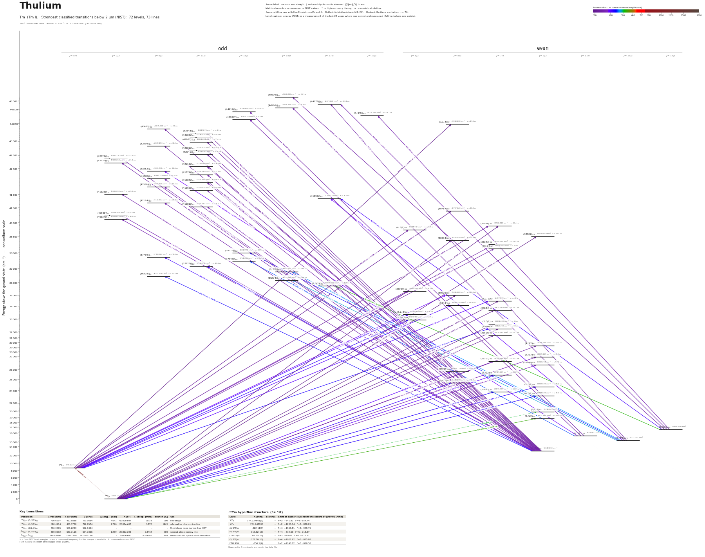

Thulium energy level diagram
Energy levels and transitions of neutral thulium (Tm I): the 73 strongest classified lines below 2 µm from the NIST Atomic Spectra Database and the 72 levels they connect, each line with its vacuum wavelength, frequency and, for 71 of them, the reduced dipole matrix element derived from the NIST transition rate. Measured lifetimes, transition rates, hyperfine constants and isotope shifts from the literature are included, each with its citation.
Hover a line or a level to isolate it, click to keep it selected. Scroll to zoom, drag to move.

Download: diagram (PDF) diagram (SVG) transitions (CSV) levels (CSV) source code

Key transitions of thulium
| Transition | λ vac (nm) | λ air (nm) | ν (THz) | |⟨J‖er‖J′⟩| (ea₀) | A (s⁻¹) | Γ/2π up. (MHz) | branch (%) | Use |
|---|---|---|---|---|---|---|---|---|
| 2F°7/2 – (5,3/2)9/2 | 410.6997 | 410.5838 | 729.9554 | 4.641 | 6.300e+07 | 10.14 | 100 | first-stage |
| 2F°7/2 – (4,5/2)9/2 | 420.4914 | 420.3730 | 712.9574 | 2.776 | 2.100e+07 | 3.872 | 86.3 | alternative blue cycling line |
| 2F°7/2 – (7/2,2)9/2 | 506.3665 | 506.2253 | 592.0464 | – | – | – | – | third-stage deep narrow-line MOT |
| 2F°7/2 – (6,5/2)9/2 | 530.8592 | 530.7116 | 564.7306 | 1.269 | 2.180e+06 | 0.3467 | 100 | second-stage narrow-line |
| 2F°7/2 – 2F°5/2 | 1140.0896 | 1139.7776 | 262.955164 | – | 7.000e+00 | 1.421e-06 | 78.4 | inner-shell M1 optical clock transition |
λ, ν from NIST level energies unless a measured frequency for this isotope is available. A: measured value or NIST. Γ/2π: natural linewidth of the upper level, 1/(2πτ).
169Tm hyperfine structure (I = 1/2)
| Level | A (MHz) | B (MHz) | Shift of each F level from the centre of gravity (MHz) |
|---|---|---|---|
| 2F°7/2 | -374.137661(3) | – | F=3: +841.81 F=4: -654.74 |
| 2F°5/2 | -704.648958 | – | F=2: +1233.14 F=3: -880.81 |
| (6,5/2)9/2 | -422.11(3) | – | F=4: +1160.81 F=5: -949.75 |
| (4,5/2)9/2 | -317.32(16) | – | F=4: +872.63 F=5: -713.97 |
| (23873)7/2 | 352.75(18) | – | F=3: -793.69 F=4: +617.31 |
| (5,3/2)9/2 | -371.50(16) | – | F=4: +1021.62 F=5: -835.88 |
| (7/2,1)5/2 | -656.5(4) | – | F=2: +1148.82 F=3: -820.58 |
Measured A, B constants; sources in the data file.
Listed Tm transitions below 2 µm
| Lower level | Upper level | λ vacuum (nm) | λ air (nm) | ν (THz) | Type | |⟨J‖er‖J′⟩| (ea₀) | A (s⁻¹) | Branching (%) | Source of matrix element / A |
|---|---|---|---|---|---|---|---|---|---|
| 2F°7/2 | (39560)7/2 | 252.7780 | 252.7020 | 1185.9913 | E1 | 0.968 NIST | 1.470e+07 NIST | 43.2 | NIST ASD (accuracy B+) |
| 2F°7/2 | (38502)9/2 | 259.7268 | 259.6491 | 1154.2609 | E1 | 1.100 NIST | 1.400e+07 NIST | 83.6 | NIST ASD (accuracy B+) |
| 2F°7/2 | (38434)5/2 | 260.1868 | 260.1091 | 1152.2199 | E1 | 0.882 NIST | 1.490e+07 NIST | 76.4 | NIST ASD (accuracy B+) |
| 2F°5/2 | (7/2,3)5/2 | 284.1960 | 284.1124 | 1054.8793 | E1 | 0.976 NIST | 1.400e+07 NIST | 66.9 | NIST ASD (accuracy D+) |
| 2F°7/2 | (35026)5/2 | 285.5004 | 285.4165 | 1050.0597 | E1 | 1.291 NIST | 2.420e+07 NIST | 33.4 | NIST ASD (accuracy B) |
| 2F°7/2 | (5/2,1)7/2 | 291.5692 | 291.4839 | 1028.2033 | E1 | 0.959 NIST | 9.400e+06 NIST | 4.51 | NIST ASD (accuracy C+) |
| 2F°7/2 | (33624)7/2 | 297.4086 | 297.3218 | 1008.0156 | E1 | 1.501 NIST | 2.170e+07 NIST | 97.9 | NIST ASD (accuracy B+) |
| 2F°7/2 | (3,5/2)7/2 | 304.7757 | 304.6870 | 983.6496 | E1 | 1.342 NIST | 1.610e+07 NIST | 82.1 | NIST ASD (accuracy B+) |
| 2F°7/2 | (32446)7/2 | 308.2019 | 308.1124 | 972.7144 | E1 | 1.422 NIST | 1.750e+07 NIST | 52.5 | NIST ASD (accuracy B+) |
| 2F°5/2 | (40787)5/2 | 312.3439 | 312.2533 | 959.8154 | E1 | 2.346 NIST | 6.100e+07 NIST | 99.4 | NIST ASD (accuracy B+) |
| 2F°7/2 | (31510)7/2 | 317.3572 | 317.2654 | 944.6532 | E1 | 1.417 NIST | 1.590e+07 NIST | 87.6 | NIST ASD (accuracy B) |
| 2F°5/2 | (39560)7/2 | 324.7896 | 324.6959 | 923.0360 | E1 | 1.839 NIST | 2.500e+07 NIST | 73.5 | NIST ASD (accuracy D+) |
| 2F°5/2 | (4,5/2)3/2 | 325.2720 | 325.1782 | 921.6668 | E1 | 1.206 NIST | 2.140e+07 NIST | 99.9 | NIST ASD (accuracy B+) |
| (6,3/2)9/2 | (43675)°9/2 | 327.2717 | 327.1774 | 916.0353 | E1 | 1.611 NIST | 1.500e+07 NIST | 33 | NIST ASD (accuracy D) |
| (6,3/2)9/2 | (43448)°11/2 | 329.7254 | 329.6305 | 909.2186 | E1 | 1.900 NIST | 1.700e+07 NIST | 81.6 | NIST ASD (accuracy C) |
| (6,3/2)9/2 | (43186)°11/2 | 332.5936 | 332.4979 | 901.3777 | E1 | 1.400 NIST | 9.000e+06 NIST | 81.2 | NIST ASD (accuracy D) |
| (6,3/2)9/2 | (42962)°11/2 | 335.0951 | 334.9988 | 894.6489 | E1 | 3.835 NIST | 6.600e+07 NIST | 48.8 | NIST ASD (accuracy B) |
| (6,3/2)9/2 | (42839)°9/2 | 336.4751 | 336.3784 | 890.9797 | E1 | 1.371 NIST | 1.000e+07 NIST | 30.2 | NIST ASD (accuracy D) |
| 2F°5/2 | (38343)7/2 | 338.1654 | 338.0683 | 886.5261 | E1 | 1.414 NIST | 1.310e+07 NIST | 82.8 | NIST ASD (accuracy B) |
| (6,3/2)9/2 | (42582)°11/2 | 339.4161 | 339.3187 | 883.2595 | E1 | 2.764 NIST | 3.300e+07 NIST | 72.9 | NIST ASD (accuracy C) |
| (6,3/2)9/2 | (42541)°11/2 | 339.8845 | 339.7870 | 882.0421 | E1 | 2.812 NIST | 3.400e+07 NIST | 81.6 | NIST ASD (accuracy C) |
| 2F°5/2 | (38123)7/2 | 340.6949 | 340.5971 | 879.9441 | E1 | 1.380 NIST | 1.220e+07 NIST | 80.5 | NIST ASD (accuracy B) |
| 2F°7/2 | (4,3/2)9/2 | 341.1026 | 341.0048 | 878.8923 | E1 | 1.386 NIST | 9.800e+06 NIST | 100 | NIST ASD (accuracy B+) |
| (6,3/2)15/2 | (44572)°17/2 | 341.2874 | 341.1895 | 878.4164 | E1 | 1.527 NIST | 6.600e+06 NIST | 8.84 | NIST ASD (accuracy C+) |
| (6,3/2)15/2 | (44566)°15/2 | 341.3570 | 341.2591 | 878.2374 | E1 | 6.139 NIST | 1.200e+08 NIST | 75.6 | NIST ASD (accuracy D+) |
| (6,3/2)9/2 | (42371)°7/2 | 341.8674 | 341.7694 | 876.9262 | E1 | 1.820 NIST | 2.100e+07 NIST | 78.3 | NIST ASD (accuracy C) |
| (6,5/2)17/2 | (45609)°15/2 | 343.0312 | 342.9329 | 873.9510 | E1 | 6.002 NIST | 1.130e+08 NIST | 70.1 | NIST ASD (accuracy C) |
| (6,3/2)9/2 | (42133)°7/2 | 344.6653 | 344.5666 | 869.8074 | E1 | 1.638 NIST | 1.660e+07 NIST | 35 | NIST ASD (accuracy B+) |
| (6,3/2)9/2 | (42119)°11/2 | 344.8339 | 344.7351 | 869.3822 | E1 | 2.424 NIST | 2.420e+07 NIST | 64.6 | NIST ASD (accuracy B+) |
| (6,3/2)11/2 | (44419)°13/2 | 346.8503 | 346.7510 | 864.3282 | E1 | 3.982 NIST | 5.500e+07 NIST | 48.9 | NIST ASD (accuracy D+) |
| (6,3/2)9/2 | (41874)°11/2 | 347.7685 | 347.6690 | 862.0460 | E1 | 4.085 NIST | 6.700e+07 NIST | 79.1 | NIST ASD (accuracy B+) |
| (6,3/2)11/2 | (44307)°13/2 | 348.1970 | 348.0973 | 860.9853 | E1 | 3.932 NIST | 5.300e+07 NIST | 31.8 | NIST ASD (accuracy D+) |
| (6,3/2)9/2 | (41786)°9/2 | 348.8375 | 348.7377 | 859.4042 | E1 | 5.790 NIST | 1.600e+08 NIST | 94.4 | NIST ASD (accuracy B+) |
| (6,3/2)9/2 | (41687)°11/2 | 350.0445 | 349.9444 | 856.4409 | E1 | 1.702 NIST | 1.140e+07 NIST | 57.1 | NIST ASD (accuracy B) |
| (6,3/2)9/2 | (41576)°9/2 | 351.4131 | 351.3126 | 853.1055 | E1 | 1.404 NIST | 9.200e+06 NIST | 20.7 | NIST ASD (accuracy B) |
| (6,3/2)9/2 | (41569)°11/2 | 351.5000 | 351.3995 | 852.8947 | E1 | 1.829 NIST | 1.300e+07 NIST | 77.7 | NIST ASD (accuracy B) |
| (6,3/2)9/2 | (41525)°7/2 | 352.0434 | 351.9427 | 851.5782 | E1 | 1.731 NIST | 1.740e+07 NIST | 78.6 | NIST ASD (accuracy B+) |
| (6,5/2)17/2 | (44572)°17/2 | 355.6832 | 355.5816 | 842.8637 | E1 | 5.097 NIST | 6.500e+07 NIST | 87.1 | NIST ASD (accuracy B+) |
| (6,3/2)9/2 | (41124)°9/2 | 357.0826 | 356.9807 | 839.5605 | E1 | 2.526 NIST | 2.840e+07 NIST | 81.5 | NIST ASD (accuracy B+) |
| (6,3/2)9/2 | (41081)°11/2 | 357.6311 | 357.5290 | 838.2729 | E1 | 2.016 NIST | 1.500e+07 NIST | 69.9 | NIST ASD (accuracy B+) |
| (6,5/2)17/2 | (5,9/2)°19/2 | 358.7090 | 358.6067 | 835.7538 | E1 | 5.688 NIST | 7.100e+07 NIST | 100 | NIST ASD (accuracy B+) |
| (6,3/2)9/2 | (40596)°7/2 | 363.9448 | 363.8411 | 823.7305 | E1 | 4.555 NIST | 1.090e+08 NIST | 92.7 | NIST ASD (accuracy B+) |
| (6,3/2)9/2 | (40534)°7/2 | 364.7743 | 364.6703 | 821.8575 | E1 | 3.363 NIST | 5.900e+07 NIST | 96.2 | NIST ASD (accuracy B+) |
| 2F°7/2 | (5,5/2)9/2 | 371.8976 | 371.7918 | 806.1157 | E1 | 6.046 NIST | 1.440e+08 NIST | 99.4 | NIST ASD (accuracy B+) |
| 2F°7/2 | (26701)7/2 | 374.5132 | 374.4068 | 800.4856 | E1 | 4.531 NIST | 9.900e+07 NIST | 100 | NIST ASD (accuracy B+) |
| 2F°7/2 | (26646)9/2 | 375.2878 | 375.1812 | 798.8334 | E1 | 2.131 NIST | 1.740e+07 NIST | 99.9 | NIST ASD (accuracy B) |
| 2F°5/2 | (35090)3/2 | 379.9619 | 379.8541 | 789.0066 | E1 | 3.650 NIST | 1.230e+08 NIST | 99.6 | NIST ASD (accuracy B+) |
| (6,3/2)11/2 | (41882)°9/2 | 380.3159 | 380.2080 | 788.2721 | E1 | 2.376 NIST | 2.080e+07 NIST | 46.8 | NIST ASD (accuracy B+) |
| 2F°5/2 | (35026)5/2 | 380.8802 | 380.7721 | 787.1044 | E1 | 2.802 NIST | 4.800e+07 NIST | 66.2 | NIST ASD (accuracy B+) |
| (6,3/2)15/2 | (41299)°17/2 | 384.1962 | 384.0872 | 780.3108 | E1 | 4.512 NIST | 4.040e+07 NIST | 67.1 | NIST ASD (accuracy B+) |
| 2F°7/2 | (25745)5/2 | 388.4232 | 388.3131 | 771.8192 | E1 | 4.289 NIST | 1.060e+08 NIST | 99.6 | NIST ASD (accuracy B+) |
| 2F°7/2 | (5,5/2)7/2 | 388.8449 | 388.7347 | 770.9822 | E1 | 2.939 NIST | 3.720e+07 NIST | 97.5 | NIST ASD (accuracy B+) |
| 2F°5/2 | (5/2,1)7/2 | 391.7585 | 391.6476 | 765.2480 | E1 | 6.856 NIST | 1.980e+08 NIST | 95 | NIST ASD (accuracy B+) |
| 2F°5/2 | (5/2,1)5/2 | 395.0390 | 394.9272 | 758.8933 | E1 | 5.001 NIST | 1.370e+08 NIST | 91.8 | NIST ASD (accuracy B+) |
| (6,5/2)17/2 | (41299)°17/2 | 402.5367 | 402.4229 | 744.7581 | E1 | 3.212 NIST | 1.780e+07 NIST | 29.5 | NIST ASD (accuracy B+) |
| 2F°5/2 | (5/2,2)3/2 | 404.5616 | 404.4473 | 741.0305 | E1 | 1.854 NIST | 2.630e+07 NIST | 99.9 | NIST ASD (accuracy B+) |
| (6,3/2)9/2 | (37769)°9/2 | 405.6951 | 405.5806 | 738.9600 | E1 | 1.572 NIST | 7.500e+06 NIST | 58.7 | NIST ASD (accuracy B+) |
| 2F°7/2 | (7/2,1)5/2 | 409.5336 | 409.4181 | 732.0338 | E1 | 4.465 NIST | 9.800e+07 NIST | 100 | NIST ASD (accuracy B+) |
| 2F°7/2 | (5,3/2)9/2 | 410.6997 | 410.5838 | 729.9554 | E1 | 4.641 measured | 6.300e+07 measured | 100 | Kolachevsky, Akimov, Tolstikhina, Chebakov, Sokolov, Rodionov, Kanorski, Sorokin, Appl. P… |
| 2F°5/2 | (3,5/2)3/2 | 413.9498 | 413.8331 | 724.2241 | E1 | 3.326 NIST | 7.900e+07 NIST | 100 | NIST ASD (accuracy B+) |
| (6,3/2)9/2 | (37277)°11/2 | 413.9558 | 413.8391 | 724.2137 | E1 | 2.633 NIST | 1.650e+07 NIST | 74.4 | NIST ASD (accuracy B+) |
| 2F°7/2 | (23873)7/2 | 418.8796 | 418.7616 | 715.7007 | E1 | 4.310 NIST | 6.400e+07 NIST | 99.8 | NIST ASD (accuracy B+) |
| 2F°7/2 | (4,5/2)9/2 | 420.4914 | 420.3730 | 712.9574 | E1 | 2.776 measured | 2.100e+07 measured | 86.3 | Kolachevsky, Akimov, Tolstikhina, Chebakov, Sokolov, Rodionov, Kanorski, Sorokin, Appl. P… |
| 2F°5/2 | (32446)7/2 | 422.3862 | 422.2672 | 709.7591 | E1 | 2.161 NIST | 1.570e+07 NIST | 47.1 | NIST ASD (accuracy B+) |
| (6,3/2)9/2 | (36378)°9/2 | 429.9573 | 429.8364 | 697.2610 | E1 | 1.879 NIST | 9.000e+06 NIST | 60.9 | NIST ASD (accuracy B+) |
| (6,3/2)15/2 | (38013)°13/2 | 439.7191 | 439.5956 | 681.7818 | E1 | 1.781 NIST | 5.400e+06 NIST | 56.7 | NIST ASD (accuracy B+) |
| (6,3/2)11/2 | (37646)°13/2 | 453.3426 | 453.2155 | 661.2935 | E1 | 1.982 NIST | 6.100e+06 NIST | 63.4 | NIST ASD (accuracy B+) |
| (6,3/2)15/2 | (6,3/2)°15/2 | 467.6629 | 467.5321 | 641.0439 | E1 | 2.510 NIST | 7.800e+06 NIST | 85.8 | NIST ASD (accuracy B+) |
| (6,3/2)15/2 | (36274)°15/2 | 476.1239 | 475.9908 | 629.6522 | E1 | 2.185 NIST | 5.600e+06 NIST | 77.3 | NIST ASD (accuracy B+) |
| 2F°7/2 | (7/2,2)9/2 | 506.3665 | 506.2253 | 592.0464 | E1 | – | – | – | – |
| (6,5/2)17/2 | (6,5/2)°17/2 | 521.4826 | 521.3374 | 574.8849 | E1 | 2.680 NIST | 5.700e+06 NIST | 63.8 | NIST ASD (accuracy B+) |
| 2F°7/2 | (6,5/2)9/2 | 530.8592 | 530.7116 | 564.7306 | E1 | 1.269 measured | 2.180e+06 measured | 100 | Anderson, Den Hartog, Lawler, J. Opt. Soc. Am. B 13, 2382 (1996), Table 1 |
| 2F°7/2 | 2F°5/2 | 1140.0896 | 1139.7776 | 262.9552 | M1 | – | 7.000e+00 theory | 78.4 | Kolachevsky, Akimov, Tolstikhina, Chebakov, Sokolov, Rodionov, Kanorski, Sorokin, Appl. P… |
Reduced dipole matrix elements follow the convention A = ω³|d|²/(3πε₀ħc³(2J′+1)), with J′ the upper level. Tags show where a number comes from: measured, NIST compilation, high-accuracy theory, or a model calculation.
Tm energy levels
Tm⁺ ionisation limit 49880.57 cm⁻¹ = 6.18440 eV (200.479 nm)
Sources
- Anderson, Den Hartog, Lawler, J. Opt. Soc. Am. B 13, 2382 (1996), Table 1
- Anderson, Den Hartog, Lawler, J. Opt. Soc. Am. B 13, 2382 (1996), Table 2
- Fedorov, Vishnyakova, Kalganova, Sukachev, Golovizin, Tregubov, Khabarova, Akimov, Kolach…
- Giglberger, Penselin, Z. Phys. 199, 244 (1967) (abstract)
- Golovizin, Fedorova, Tregubov, Sukachev, Khabarova, Sorokin, Kolachevsky, Nat. Commun. 10…
- Kolachevsky, Akimov, Tolstikhina, Chebakov, Sokolov, Rodionov, Kanorski, Sorokin, Appl. P…
- Kolachevsky, Akimov, Tolstikhina, Chebakov, Sokolov, Rodionov, Kanorski, Sorokin, Appl. P…
- Mishin, Tregubov, Golovizin, Kolachevsky, arXiv:2406.20002 (2024)
- NIST ASD
- NIST ASD level energies
- Sukachev, Fedorov, Tolstikhina, Tregubov, Kalganova, Vishnyakova, Golovizin, Kolachevsky,…
169Tm has I=1/2: every level is a hyperfine doublet F=J+-1/2 with splitting A(J+1/2), no B. Signed splittings follow Kolachevsky et al. 2007 (negative = larger F lower). The Anderson et al. 1996 lifetime tables (68 even + 126 odd levels) were read from the publisher abstract page, whose HTML embeds the tables, through an automated page reader (direct download is captcha-blocked), not from the PDF; every row was matched to a NIST level by energy (0.02 cm^-1) and J, and all lifetimes were checked to be <= 1/sum(A) from the NIST lines file within 15%; rows used on the site were read twice. No per-level uncertainty is printed in those tables (so no unc is given). Extra fields beyond SCHEMA.md: top-level ionization_limit; level fields lifetime_other, hfs_splitting_MHz; transition fields linewidth_MHz / linewidth_kHz / linewidth_Hz, leak_to_metastable, frequency_component_THz, magic_wavelength_nm, differential_frequency_MHz. frequency_THz of the clock line is the hyperfine centre of gravity derived from the measured F=4->F=3 component. rme_J_ea0 values are derived from the A coefficient of the same entry (schema convention). Entries flagged LOWER BOUND / UPPER BOUND / LOWER LIMIT in their note are bounds. g_J without a literature source is copied from the NIST levels file.
Atoms with measured data
- Lithium-632 levels, 85 lines
- Lithium-732 levels, 85 lines
- Beryllium-917 levels, 26 lines
- Sodium-2336 levels, 106 lines
- Magnesium-2418 levels, 61 lines
- Magnesium-2518 levels, 61 lines
- Potassium-3934 levels, 84 lines
- Potassium-4034 levels, 84 lines
- Potassium-4134 levels, 84 lines
- Calcium-4035 levels, 61 lines
- Calcium-4335 levels, 61 lines
- Rubidium-8536 levels, 94 lines
- Rubidium-8736 levels, 94 lines
- Strontium-8740 levels, 70 lines
- Strontium-8840 levels, 70 lines
- Caesium-13331 levels, 79 lines
- Barium-13744 levels, 89 lines
- Barium-13844 levels, 89 lines
- Dysprosium-16339 levels, 55 lines
- Dysprosium-16439 levels, 55 lines
- Ytterbium-17118 levels, 26 lines
- Ytterbium-17418 levels, 26 lines